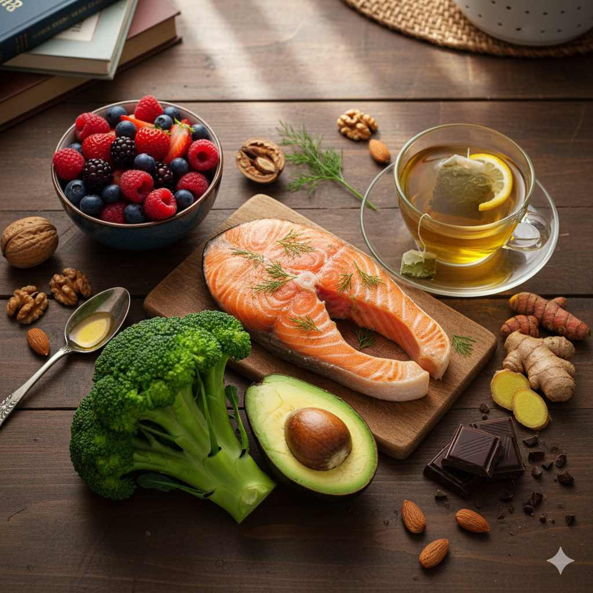

Did you know that your skeleton completely regenerates itself about every 10 years? That's right—the bones you have today aren't the same ones you had a decade ago. This remarkable process requires a constant supply of key nutrients, and while dairy often gets the spotlight, it's far from the only player in bone health.
As a nutrition specialist with over 15 years of clinical experience, I've seen countless patients surprised to learn that strong bones require more than just calcium, and that dairy isn't the only—or even the best—source for everyone. Let's explore the comprehensive world of bone-building foods that can support your skeletal health throughout life.
The Bone Health Trinity: Calcium, Vitamin D, and Magnesium
While calcium often steals the show in bone health conversations, it's actually part of a crucial trio. Vitamin D is essential for calcium absorption, and magnesium helps convert vitamin D into its active form while also contributing to bone crystal formation. Without these partners, calcium can't do its job effectively.
Key Insight: Research shows that getting calcium from food sources is generally more effective for bone health than supplements, as the nutrients work synergistically when consumed together.
Plant-Based Calcium Powerhouses
For those who are lactose intolerant, vegan, or simply looking to diversify their nutrient sources, these plant foods offer impressive calcium content:
Leafy Greens
Dark leafy greens are calcium superstars. Collard greens lead the pack with a remarkable 268 mg of calcium per cooked cup—that's more calcium than a glass of milk! Kale, bok choy, and turnip greens are also excellent choices. The calcium in these greens is highly bioavailable, meaning your body can easily absorb and use it.
Fortified Foods
Many plant-based milks (almond, soy, oat) and juices are fortified with calcium and vitamin D, making them convenient alternatives to dairy. Always check labels, as fortification levels vary. Tofu processed with calcium sulfate is another fantastic option, providing about 434 mg per half-cup.
Nuts and Seeds
Almonds and sesame seeds are particularly rich in calcium. Just one ounce of almonds (about 23 nuts) provides 76 mg of calcium, along with magnesium and protein. Chia seeds and flaxseeds also contribute to your daily calcium intake while offering omega-3 fatty acids that may help reduce inflammation.
Vitamin D: The Calcium Absorber
Without adequate vitamin D, your body can't properly absorb calcium, regardless of how much you consume. While sunlight is the primary source, these foods can help boost your levels:
- Fatty fish: Salmon, mackerel, and tuna are excellent sources. A 3-ounce serving of cooked salmon provides about 70% of the daily vitamin D requirement.
- Egg yolks: Specifically from pastured chickens, which tend to have higher vitamin D content.
- Mushrooms: When exposed to UV light, mushrooms can synthesize vitamin D just like human skin. Look for varieties labeled as "UV-treated" or "high in vitamin D."
Magnesium-Rich Foods for Bone Crystallization
Magnesium plays a critical role in bone health by helping to regulate calcium and vitamin D levels in the body. Excellent sources include:
- Pumpkin seeds: Just one ounce provides 37% of your daily magnesium needs.
- Spinach: One cup of cooked spinach contains 37% of the recommended daily intake.
- Black beans: A versatile legume that provides 30% of your daily magnesium per cooked cup.
- Avocado: A medium avocado offers about 15% of your daily magnesium requirement.
Creating Bone-Healthy Meals
Building meals that support bone density is easier than you might think. Here's a sample day of bone-nourishing eating:
Breakfast: Fortified oatmeal with almonds, chia seeds, and sliced strawberries.
Lunch: Large salad with kale, chickpeas, avocado, and sesame seed dressing.
Dinner: Grilled salmon with steamed broccoli and quinoa.
Snack: Fortified plant-based yogurt with a handful of almonds.
Pro Tip: Spread your calcium intake throughout the day rather than consuming it all at once. Your body can only absorb about 500 mg of calcium at a time, so smaller, regular doses are more effective.
Lifelong Bone Health Strategies
Bone health isn't just about what you eat—it's also about lifestyle factors. Weight-bearing exercises like walking, dancing, and strength training stimulate bone formation. Additionally, limiting alcohol and avoiding smoking are crucial, as both can interfere with calcium absorption and bone remodeling.
Remember, it's never too early or too late to focus on bone health. Whether you're in your 20s building peak bone mass or in your 60s maintaining what you have, these nutritional strategies can help reduce fracture risk and support mobility throughout your life.
Frequently Asked Questions
Absolutely, Michael. Many plant foods are rich in highly absorbable calcium. Focus on dark leafy greens like collard greens and kale, fortified plant milks, calcium-set tofu, almonds, and sesame seeds. A varied diet containing these foods can easily meet your calcium needs without any dairy.
That's an excellent question, Sarah. Bone density peaks around age 30, so the earlier you start building strong bones, the better. However, it's never too late to implement bone-healthy habits. Even post-menopausal women can slow bone loss with proper nutrition and exercise. I recommend everyone focus on bone health throughout their lifespan.
Great question, David. While supplements can be helpful for those who can't meet their needs through diet alone, food sources are generally preferred. The calcium in foods comes packaged with other nutrients that enhance its absorption and utilization. If you do need supplements, take them in divided doses (no more than 500 mg at a time) and with food for better absorption.